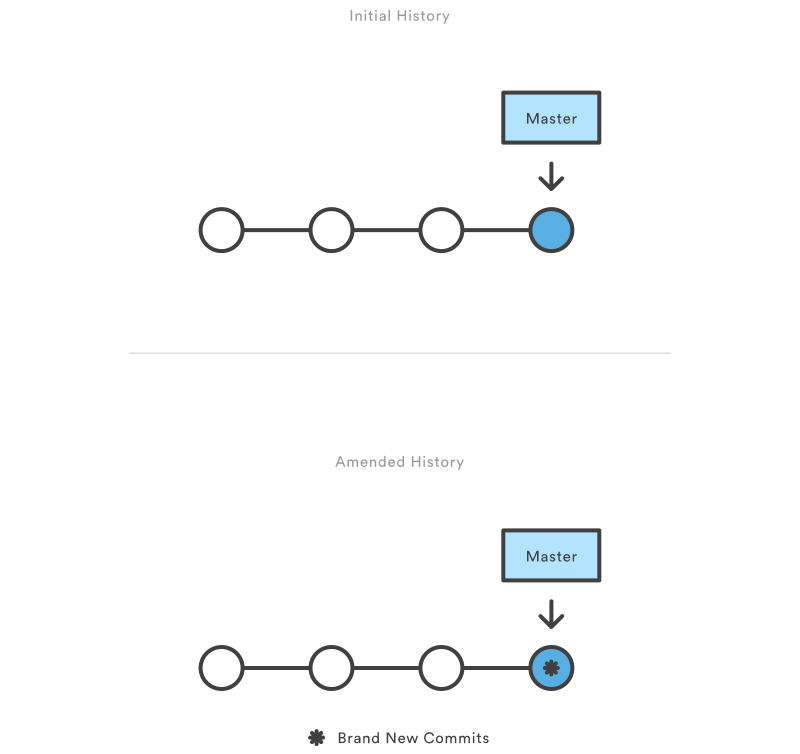
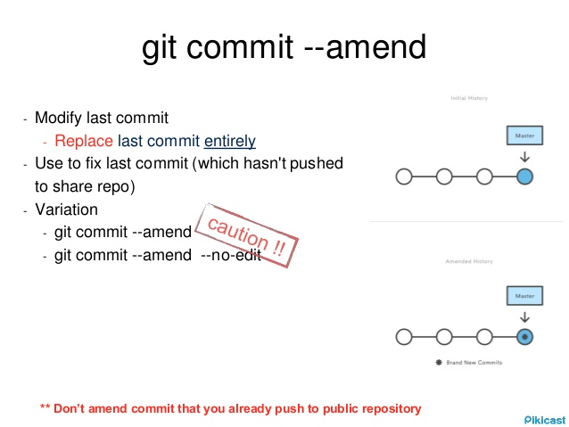

前言
我们在日常使用Git时，有时会遇到需要修改上次commit提交信息的情况。比如：修改上次提交信息中的错误内容，或者想为上次提交加入些新内容等等。
Git覆写上次提交（amend）
我们可以使用git commit命令的amend选项来覆写上次提交。
$ git commit --amend
代码清单：使用
--amend选项覆写上次提交
执行此命令后，git会自动弹出编辑界面，让你可以修改上次的提交信息。
$ git commit --amend -m "an updated commit message"
代码清单：使用
-m选项快速修改
而使用--no-edit选项，表示不更动上次已经提交的信息。适用于添加新内容到上次提交的情况。
$ git commit --amend --no-edit
代码清单：使用
--no-edit选项
注意事项
--amend
Replace the tip of the current branch by creating a new
commit. The recorded tree is prepared as usual (including
the effect of the -i and -o options and explicit pathspec),
and the message from the original commit is used as the
starting point, instead of an empty message, when no other
message is specified from the command line via options such
as -m, -F, -c, etc. The new commit has the same parents and
author as the current one (the --reset-author option can
countermand this).
It is a rough equivalent for:
$ git reset --soft HEAD^
$ ... do something else to come up with the right tree ...
$ git commit -c ORIG_HEAD
but can be used to amend a merge commit.
You should understand the implications of rewriting history
if you amend a commit that has already been published. (See
the "RECOVERING FROM UPSTREAM REBASE" section in git-
rebase(1).)
注：关于
--amend的说明（取自git help）
需要注意的是，amend选项不会直接修改上次的提交，而是会新创建出一枚提交，包含了上次提交的全部内容与新添加的内容，原提交会被”删除”。可以观察到，修改前后的提交hash值是不同的。
所以，对于已经推送到远程仓库的提交，要谨慎使用amend选项。
$ git push <remote> <branch> --force
代码清单：强制覆盖远程分支
而对于已经推送到远程仓库的提交，可以使用强制推送来覆盖（谨慎使用）。

图：
git commit --amend原理示意图（取自Atlassian）

图：
git commit --amend注意事项图（取自Pikicast）
参考资料
Atlassian Tutorials：https://www.atlassian.com/git/tutorials/rewriting-history